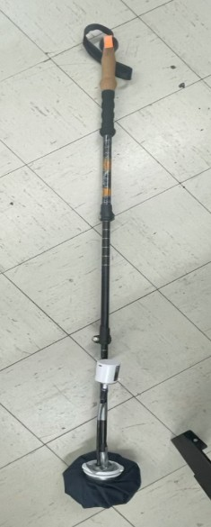
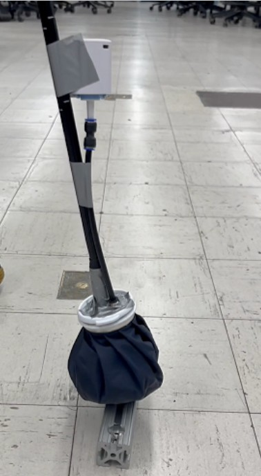

Prototype V1
Our first prototype gave us a very good idea of how we approached our future goals.
Without a defined membrane, we repurposed an ice pack holder as the transformable membrane and filled it with coffee grounds, which served as a base to test the core concept without custom parts.
Actuation was entirely manual: the vacuum had to be switched on directly, with no button or trigger yet. But even in these first stages, the jamming worked. The grounds locked under pressure, the grip held, and we had enough user data to start refining.

